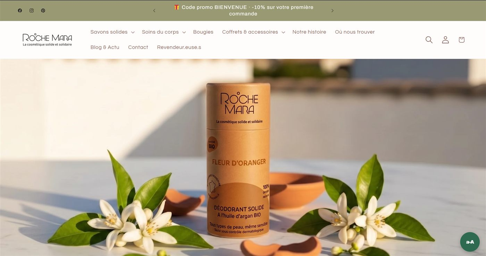

Titre
Refonte du site Shopify de RocheMara — UX/UI, parcours client et optimisation de la conversion.
rochemara.com ↗
Le site vitrine de RocheMara convertissait mal — trop d'étapes avant l'achat, hiérarchie visuelle peu claire.
Stagiaire chargé de la refonte du parcours client : navigation, hiérarchie du contenu, optimisation SEO.
Audit du site existant, priorisation des pages clés, maquettage des nouveaux parcours, intégration sur Shopify.
Un thème repensé pour la conversion — projet toujours actif au moment où j'écris ce portfolio.
Identité de marque pour un concept store fictif inspiré de La Redoute — logo et déclinaisons imprimées (billet, story Instagram).
Design packaging pour une marque de boissons fictive — mascotte paresseux illustrée, identité entre nature et urbain.
Logo et identité visuelle pour une association de soutien aux bébés prématurés — symbolique des mains et du cœur.
Identité de marque pour un studio de jeu vidéo fictif — du nom de code « Khimera » (gothique) à la marque finale « Distant Worlds », logo et interface de jeu.
Campagne d'affiches pour une association de conservation animale (Bornean Orangutan Survival) — plusieurs déclinaisons visuelles et typographiques.
Identité et design produit pour un sticker connecté fictif — lettrage, QR code intégré et déclinaisons de découpe.
Stratégie de communication pour un service fictif de consigne de boissons — benchmark, copy stratégie et déclinaisons (affichage, réseaux sociaux).
Projet de groupe avec Loreleï, Paco et Mattéo.